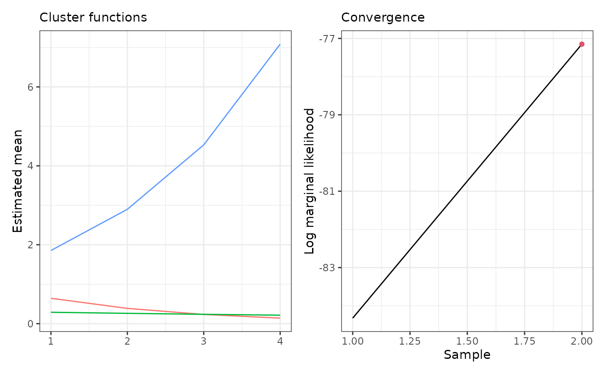

sfclust() is the main user-facing function for Bayesian spatial functional
clustering via reversible-jump MCMC. It dispatches on the class of the first
argument:
Usage
sfclust(x, ...)
# Default S3 method
sfclust(x, ...)
# S3 method for class 'data.frame'
sfclust(
x,
adjacency,
graphdata = NULL,
fnames = NULL,
nclust = 10,
move_prob = c(0.425, 0.425, 0.1, 0.05),
logpen = log(1 - 0.5),
correction = TRUE,
niter = 100,
burnin = 0,
thin = 1,
nmessage = 10,
path_save = NULL,
nsave = nmessage,
...
)
# S3 method for class 'stars'
sfclust(
x,
nclust = 10,
graphdata = NULL,
spnames = NULL,
move_prob = c(0.425, 0.425, 0.1, 0.05),
logpen = log(1 - 0.5),
correction = TRUE,
niter = 100,
burnin = 0,
thin = 1,
nmessage = 10,
path_save = NULL,
nsave = nmessage,
...
)Arguments
- x
A
data.frame(core interface) or astarsobject (stars interface). Dispatch is based on this argument's class. Forsfclust.data.frame: a long-format data frame with at least columnsid(unique row index) andids(integer spatial unit index, 1 tons), plus any response and covariate columns referenced informula. Forsfclust.stars: astarsobject containing response variables, covariates, and other necessary data.- ...
Additional arguments such as
formula,family, and others passed toinla().- adjacency
A square weighted adjacency matrix (ns × ns) encoding spatial contiguity and edge weights. Can be a dense
matrixor a sparseMatrix. Typically obtained viaigraph::as_adjacency_matrix()on the graph returned bygenclust().- graphdata
A list with components
graph,mst, andmembershipas returned bygenclust(). IfNULL, it is built automatically.- fnames
Character. Name of the column in
xthat holds the functional index (e.g."id_time"). Used by plot methods; not required by the algorithm itself. Default isNULL.- nclust
Integer. Initial number of clusters when
graphdata = NULL. Ignored ifgraphdatais provided (default is10).- move_prob
A numeric vector of probabilities for the MCMC move types: birth, death, change, and hyperparameter (default is
c(0.425, 0.425, 0.1, 0.05)).- logpen
A negative numeric value representing the log-scale penalty for increasing the number of clusters by one. The number of clusters is assumed to follow a geometric prior with probability
q, making this penalty equal tolog(1 - q). For example, iflogpen = -50, then a proposal that increases the number of clusters will only be favored if it improves the log marginal likelihood by more than 50.- correction
A logical indicating whether correction to compute the marginal likelihoods should be applied (default is
TRUE). This depends on the type of effects included in theINLAmodel.- niter
An integer specifying the number of MCMC iterations after burn-in (default is
100).- burnin
An integer specifying the number of burn-in iterations to discard (default is
0).- thin
An integer specifying the thinning interval for recording the results (default is
1).- nmessage
An integer specifying how often progress messages should be printed (default is
10).- path_save
A character string specifying the file path to save the results (default is
NULL).- nsave
An integer specifying the number of iterations between saved results (default is
nmessage).- spnames
Character vector with the names of the spatial dimensions of
x. IfNULL(default), auto-detected from thestarsobject dimensions.
Value
An sfclust object (from sfclust.data.frame) or an sfclust_stars object
inheriting from sfclust (from sfclust.stars). Both contain:
samples: MCMC trace withmembership,log_mlike, andmove_counts.clust: selected clustering withid,membership, and fittedmodels.
sfclust_stars additionally carries input_args with stars (structural shell
of the input), spnames, and fnames, used by spatial plot methods.
Details
sfclust.data.frame(): core interface — takes a pre-built long-format data frame and a weighted adjacency matrix. Use this when working with any data format after converting it yourself.sfclust.stars(): stars wrapper — takes astarsspatio-temporal object, converts it to long format, builds the spatial graph, and calls the core algorithm.
This implementation draws inspiration from the methods described in the paper: "Bayesian Clustering of Spatial Functional Data with Application to a Human Mobility Study During COVID-19" by Bohai Zhang, Huiyan Sang, Zhao Tang Luo, and Hui Huang, published in The Annals of Applied Statistics, 2023. For further details on the methodology, please refer to:
The paper: doi:10.1214/22-AOAS1643
Supplementary material: doi:10.1214/22-AOAS1643SUPPB
The MCMC algorithm in this implementation is largely based on the supplementary material provided in the paper. However, we have generalized the computation of the marginal likelihood ratio by leveraging INLA (Integrated Nested Laplace Approximation). This generalization enables integration over all parameters and hyperparameters, allowing for inference within a broader family of distribution functions and model terms, thereby extending the scope and flexibility of the original approach. Further details of our approach can be found in our paper "Bayesian spatial functional data clustering: applications in disease surveillance" by Ruiman Zhong, Erick A. Chacón-Montalván, Paula Moraga:
The paper: doi:10.1002/sim.70597
Author
Ruiman Zhong ruiman.zhong@kaust.edu.sa, Erick A. Chacón-Montalván erick.chaconmontalvan@wur.nl, Paula Moraga paula.moraga@kaust.edu.sa
Examples
# \donttest{
if (requireNamespace("INLA", quietly = TRUE)) {
library(sfclust)
# Stars interface: Gaussian model
data(stgaus)
result <- sfclust(stgaus, formula = y ~ f(id_time, model = "rw1"),
niter = 10, nmessage = 1)
print(result)
summary(result, sort = TRUE)
fitted(result, sort = TRUE)
plot(result)
plot_clusters_series(result, var = y)
result2 <- update(result, niter = 2, nmessage = 1)
plot(result2)
# Stars interface: Binomial model
data(stbinom)
result <- sfclust(stbinom, formula = cases ~ poly(id_time, 2) + f(id),
family = "binomial", Ntrials = population, niter = 10, nmessage = 1)
print(result)
summary(result, sort = TRUE)
fitted(result, sort = TRUE)
plot(result)
plot_clusters_series(result, var = cases/population)
result2 <- update(result, niter = 2, nmessage = 1)
plot(result2)
# data.frame interface: Poisson model
ns <- 6L; nt <- 4L
set.seed(4)
df <- data.frame(
id = seq_len(ns * nt),
ids = rep(seq_len(ns), nt),
id_time = rep(seq_len(nt), each = ns),
expected = rep(10L, ns * nt)
)
df <- transform(df,
y = rpois(ns * nt, expected * exp(0.5 * id_time * rep(c(-1, 1), each = ns / 2, nt)))
)
adj <- Matrix::sparseMatrix(
i = c(1, 2, 4, 5, 1, 2, 3), j = c(2, 3, 5, 6, 4, 5, 6),
x = 1L, dims = c(ns, ns), symmetric = TRUE
)
result <- sfclust(df, adjacency = adj, nclust = 3, fnames = "id_time",
formula = y ~ 1 + id_time, family = "poisson", E = expected,
niter = 3, burnin = 0, thin = 1, nmessage = 1)
print(result)
summary(result, sort = TRUE)
fitted(result, sort = TRUE)
plot(result)
plot_clusters_series(result, var = y)
result2 <- update(result, niter = 2, nmessage = 1)
plot(result2)
}
#> Iteration 1: clusters = 11, births = 1, deaths = 0, changes = 0, hypers = 0, log_mlike = -1966.74074536656
#> Iteration 2: clusters = 11, births = 1, deaths = 0, changes = 0, hypers = 0, log_mlike = -1966.74074536656
#> Iteration 3: clusters = 12, births = 2, deaths = 0, changes = 0, hypers = 0, log_mlike = -1871.05702756986
#> Iteration 4: clusters = 12, births = 2, deaths = 0, changes = 0, hypers = 0, log_mlike = -1871.05702756986
#> Iteration 5: clusters = 12, births = 2, deaths = 0, changes = 0, hypers = 0, log_mlike = -1871.05702756986
#> Iteration 6: clusters = 13, births = 3, deaths = 0, changes = 0, hypers = 0, log_mlike = -1815.85189803055
#> Iteration 7: clusters = 13, births = 3, deaths = 0, changes = 0, hypers = 0, log_mlike = -1815.85189803055
#> Iteration 8: clusters = 13, births = 3, deaths = 0, changes = 0, hypers = 0, log_mlike = -1815.85189803055
#> Iteration 9: clusters = 13, births = 3, deaths = 0, changes = 0, hypers = 0, log_mlike = -1815.85189803055
#> Iteration 10: clusters = 14, births = 4, deaths = 0, changes = 0, hypers = 0, log_mlike = -1747.15110267134
#> Within-cluster formula:
#> y ~ f(id_time, model = "rw1")
#>
#> Clustering hyperparameters:
#> log(1-q) birth death change hyper
#> -0.6931472 0.4250000 0.4250000 0.1000000 0.0500000
#>
#> Clustering movement counts:
#> births deaths changes hypers
#> 4 0 0 0
#>
#> Log marginal likelihood (sample 10 out of 10): -1747.151
#> Summary for clustering sample 10 out of 10
#>
#> Within-cluster formula:
#> y ~ f(id_time, model = "rw1")
#>
#> Counts per cluster:
#> 1 2 3 4 5 6 7 8 9 10 11 12 13 14
#> 71 9 5 4 2 1 1 1 1 1 1 1 1 1
#>
#> Log marginal likelihood: -1747.151
#>
#> *** inla.core.safe: The inla program failed, but will rerun in case better initial values may help. try=1/1
#>
#> *** inla.core.safe: rerun with improved initial values
#> Iteration 1: clusters = 14, births = 0, deaths = 0, changes = 0, hypers = 0, log_mlike = -1747.15110331773
#> Iteration 2: clusters = 15, births = 1, deaths = 0, changes = 0, hypers = 0, log_mlike = -1570.37098609482
#> Warning: Log marginal-likelihood correction not required.
#> Iteration 1: clusters = 10, births = 0, deaths = 0, changes = 0, hypers = 0, log_mlike = -77156.7894588113
#> Iteration 2: clusters = 10, births = 0, deaths = 0, changes = 0, hypers = 1, log_mlike = -77156.7894588113
#> Iteration 3: clusters = 11, births = 1, deaths = 0, changes = 0, hypers = 1, log_mlike = -77066.9277737946
#> Iteration 4: clusters = 12, births = 2, deaths = 0, changes = 0, hypers = 1, log_mlike = -76914.148336736
#> Iteration 5: clusters = 12, births = 2, deaths = 0, changes = 0, hypers = 1, log_mlike = -76914.148336736
#> Iteration 6: clusters = 12, births = 2, deaths = 0, changes = 0, hypers = 1, log_mlike = -76914.148336736
#> Iteration 7: clusters = 12, births = 2, deaths = 0, changes = 0, hypers = 1, log_mlike = -76914.148336736
#> Iteration 8: clusters = 12, births = 2, deaths = 0, changes = 0, hypers = 1, log_mlike = -76914.148336736
#> Iteration 9: clusters = 12, births = 2, deaths = 0, changes = 0, hypers = 1, log_mlike = -76914.148336736
#> Iteration 10: clusters = 12, births = 2, deaths = 0, changes = 1, hypers = 1, log_mlike = -76568.1518839174
#> Within-cluster formula:
#> cases ~ poly(id_time, 2) + f(id)
#>
#> Clustering hyperparameters:
#> log(1-q) birth death change hyper
#> -0.6931472 0.4250000 0.4250000 0.1000000 0.0500000
#>
#> Clustering movement counts:
#> births deaths changes hypers
#> 2 0 1 1
#>
#> Log marginal likelihood (sample 10 out of 10): -76568.15
#> Summary for clustering sample 10 out of 10
#>
#> Within-cluster formula:
#> cases ~ poly(id_time, 2) + f(id)
#>
#> Counts per cluster:
#> 1 2 3 4 5 6 7 8 9 10 11 12
#> 71 17 2 2 1 1 1 1 1 1 1 1
#>
#> Log marginal likelihood: -76568.15
#> Iteration 1: clusters = 12, births = 0, deaths = 0, changes = 0, hypers = 0, log_mlike = -76568.1519813734
#> Iteration 2: clusters = 12, births = 0, deaths = 0, changes = 0, hypers = 0, log_mlike = -76568.1519813734
#> Warning: Log marginal-likelihood correction not required.
#> Iteration 1: clusters = 3, births = 0, deaths = 0, changes = 0, hypers = 0, log_mlike = -247.318700532878
#> Iteration 2: clusters = 3, births = 0, deaths = 0, changes = 0, hypers = 0, log_mlike = -247.318700532878
#> Iteration 3: clusters = 4, births = 1, deaths = 0, changes = 0, hypers = 0, log_mlike = -84.3225017550345
#> Within-cluster formula:
#> y ~ 1 + id_time
#>
#> Clustering hyperparameters:
#> log(1-q) birth death change hyper
#> -0.6931472 0.4250000 0.4250000 0.1000000 0.0500000
#>
#> Clustering movement counts:
#> births deaths changes hypers
#> 1 0 0 0
#>
#> Log marginal likelihood (sample 3 out of 3): -84.3225
#> Summary for clustering sample 3 out of 3
#>
#> Within-cluster formula:
#> y ~ 1 + id_time
#>
#> Counts per cluster:
#> 1 2 3 4
#> 2 2 1 1
#>
#> Log marginal likelihood: -84.3225
#> Iteration 1: clusters = 4, births = 0, deaths = 0, changes = 0, hypers = 0, log_mlike = -84.3225017550345
#> Iteration 2: clusters = 3, births = 0, deaths = 1, changes = 0, hypers = 0, log_mlike = -77.1494805389547

# }